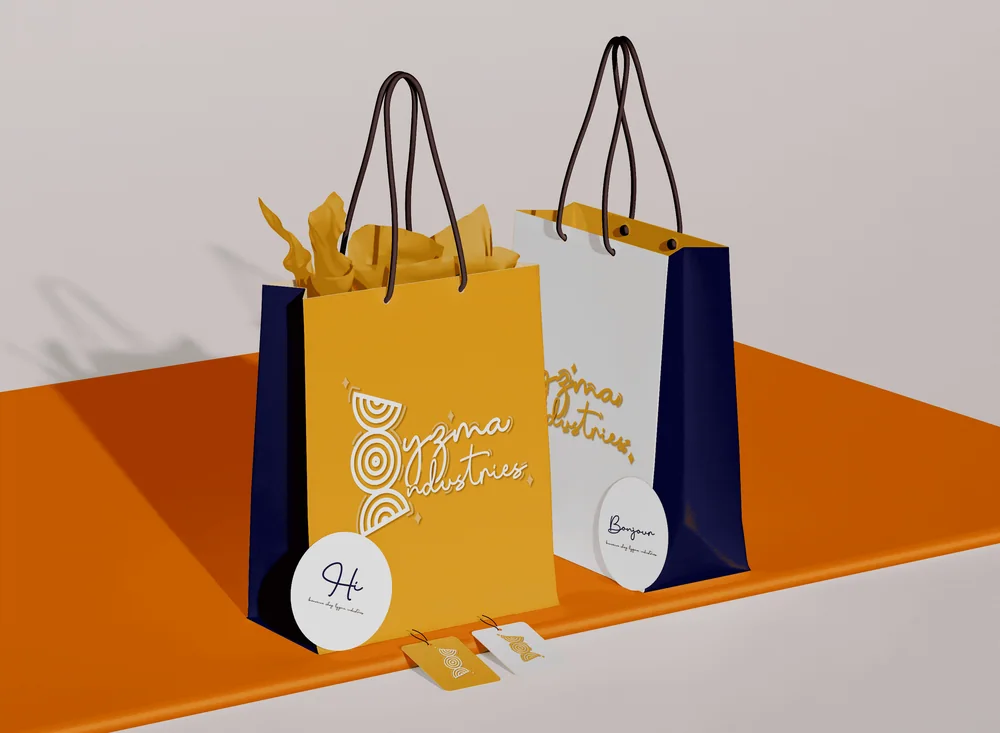

Background
Lyzma Industries is a Black women-owned company creating handcrafted high-end African-inspired jewellery. Every piece is made by hand, rooted in culture, and designed for women who wear their identity with pride.They needed a brand identity that matched the quality and soul of what they were making.
Core problem
Handcrafted luxury is a difficult space to brand. Too polished and it loses its authenticity. Too raw and it loses its premium feel. Lyzma Industries needed an identity that lived right in the middle — refined enough for high-end jewellery, warm enough to honour the craftsmanship and culture behind every piece.
Our Process
Every project at Kreeative starts in the same place — understanding the feeling before touching the design. For Lyzma Industries that feeling was clear immediately. Heritage. Femininity. Pride. The kind of quiet confidence that comes from knowing exactly who you are and where you come from.
We built the identity around that energy — African pattern, handcrafted warmth, and a gold palette that feels as precious as the jewellery itself.
Steps Taken
01 - Logo and Wordmark
A hand-lettered wordmark in warm gold that feels like it was written with intention. Flowing, feminine, and completely unique. The kind of signature that tells you immediately this brand belongs to someone with a point of view.
02 - Illustrative Brand Mark
Concentric circle patterns inspired by African craft traditions sit alongside the wordmark — referencing textile patterns, beadwork, and the geometric language of African design. It grounds the brand in its cultural roots without being literal or expected.
03 - Colour System
Warm gold on white. Simple, precious, and timeless. A palette that lets the jewellery speak while giving the brand enough presence to stand on its own.
04 - Tone and Feeling
Every design decision was made to feel handcrafted and considered. Nothing mechanical, nothing cold. This is a brand you can feel through the screen.
Key Deliverables
- Hand-lettered wordmark
- Illustrative brand mark
- Gold colour palette
- Logo variations
- Brand identity systemnts

Results and Impact
Lyzma Industries launched with an identity as carefully crafted as the jewellery it represents. A brand that honours Black women, African heritage, and the art of making something beautiful by hand.
Premium without being inaccessible. Cultural without being a costume. Exactly what it needed to be.